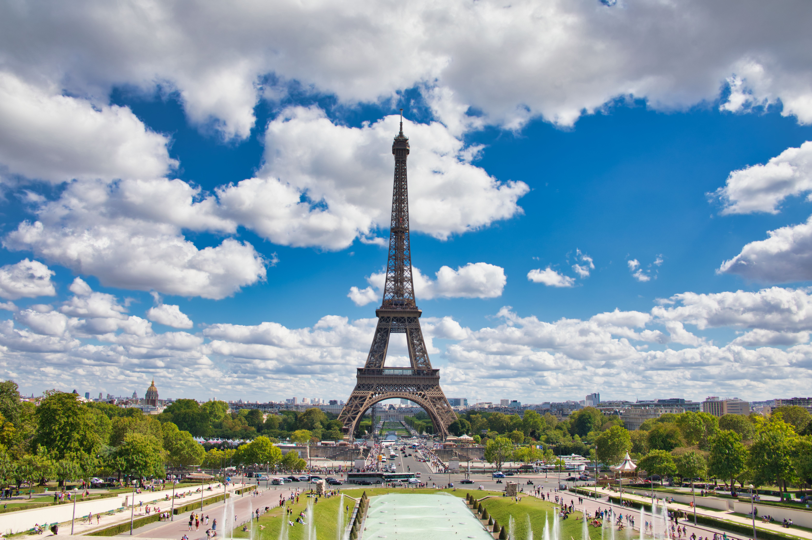
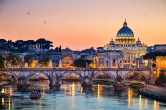

Aquí verás una pequeña lista de los lugares más visitados del mundo.
-

París, Francia
-

Machu Picchu, Perú
-
Tokio, Japón
-

Nueva York, EE. UU.
-

Roma, Italia
Si deseas conocer más, visita este artículo sobre turismo en Wikipedia .